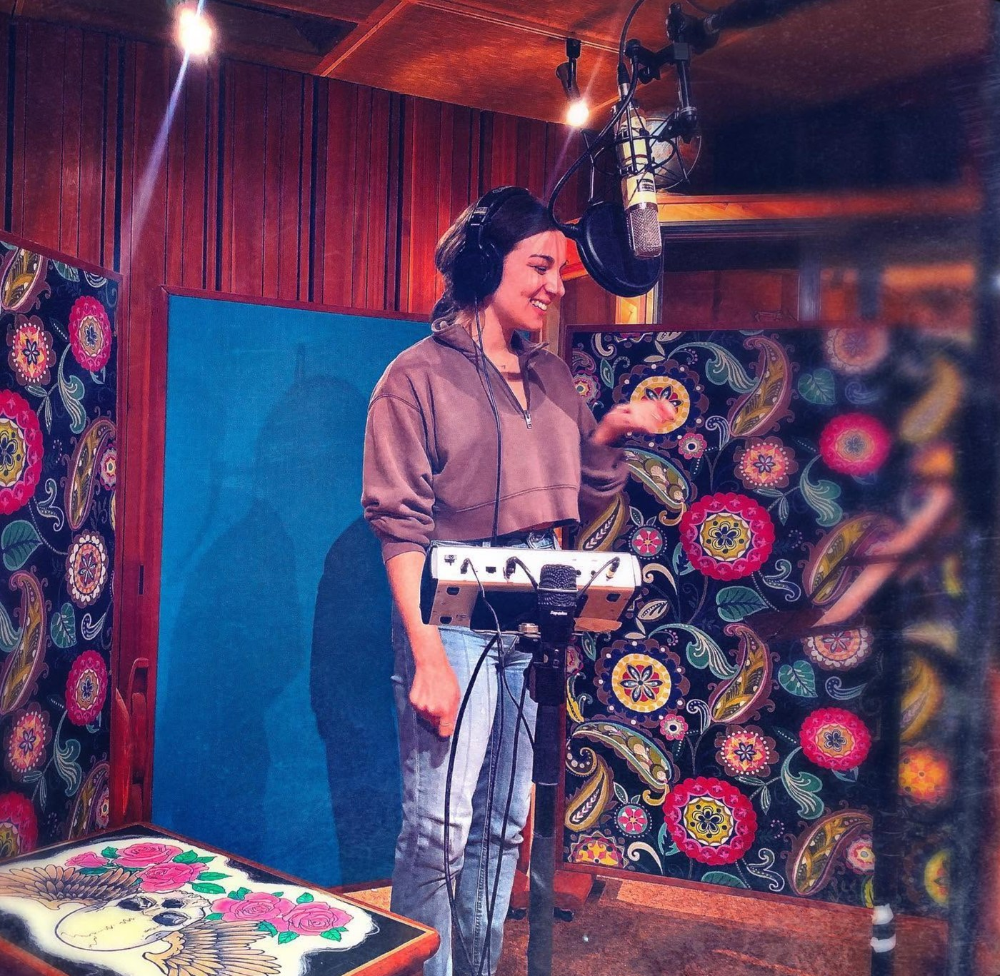

Commercial
Commercial Demo
Conversational and warm, from lifestyle brands to national campaigns: natural, never over-produced.
0:00 / 1:29
Download ↓
Warm, genuine, and unmistakably human. A bilingual Canadian voice for commercial, corporate, and narration work, in English and French.
01 Listen
Press play to hear the range. Conversational and bright, or measured and authoritative. Every read is recorded broadcast-ready from a treated home studio.
Commercial
Conversational and warm, from lifestyle brands to national campaigns: natural, never over-produced.
Corporate · E-Learning
Clear, intelligent, and engaging: ideal for narration, e-learning modules, and explainer video.
Bilingual · Français
Authentic, nuanced reads in French as well as English: a real advantage for the Canadian market.

02 About · The voice behind the work
A trained musical ear, a theatrical instinct, and genuine warmth, in every read.
Looking for a voice that's warm, professional, and easy to direct? You're in the right place.
I've been performing since before I can really remember. Musicals as a kid growing up in Winnipeg, a Bachelor of Music (Honours) in Voice Performance from Western University as an adult, and now a working life on stage, on screen, and behind the mic.
Before all of that, I spent time in bookkeeping and accounting, which taught me precision, deadlines without drama, and how to make a client's life easier instead of harder. That background shows up in how I run my business today, and it's part of why tech and SaaS companies are such a natural fit for me. I understand clean systems and clear communication, and I know how to make even a dense script sound approachable.
Voiceover is where all of that meets real, practical usefulness. Someone needs a script read, a brand to sound human, a message to land in two languages instead of one, and I get to make that happen. I offer North American English and Canadian French (Western Canada), so you're covered whether your audience is in Toronto or Tacoma.
What I love most is the problem-solving part of this work. You bring a deadline, a tone, a vision for how something should sound, and I take direction well and deliver clean, reliable audio without you having to chase me for it. People-first isn't a tagline, it's just how I do business: clear communication, fast turnaround, and a read that sounds like a person talking to another person.
P.S. A few things that have nothing to do with a microphone: I'm a serious animal lover, though I was actually afraid of cats before I had one of my own (she's since converted me completely). You'll usually find me swimming when I need to clear my head. And while I used to be a genuinely terrible baker, I've worked hard to turn that around, so don't be shy to ask about my best recipes.
03 Technical
Broadcast-ready audio, delivered fast, with everything you need to direct remotely.
i.
Home Studio
Acoustically treated booth
Professional-grade signal chain, broadcast-spec audio delivered directly to you.
ii.
Response Time
Next business day
Every quote request comes with a free sample read of your script.
iii.
Remote Sessions
Source-Connect & more
Directed sessions via Source-Connect, Zoom, or phone patch, wherever you are.
iv.
File Delivery
WAV · MP3
Any format you need: broadcast-spec or web-optimized, edited or raw.
v.
Languages
English & French
Fully bilingual, with authentic, nuanced reads in both languages.
vi.
Training
B.Mus (Hons), Western
Voice Performance, with exceptional pitch, rhythm, and breath control.
04 Get in touch
Booking a session, requesting a custom audition, or just after a quote? Send a note with your script length, usage, and timeline. Taryn replies by the next business day, with a free sample read of your script.
Based in
Toronto, Ontario · Canada
Taryn Wichenko is a bilingual actor based in Toronto, bringing grounded, instinctive storytelling to stage and screen. A Bachelor of Music (Honours) in Voice Performance from Western University underpins a growing body of work across musical theatre, screen, and commercial performance.
02 Gallery
Headshots and production stills.